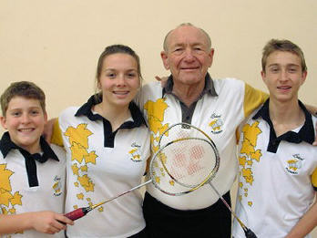
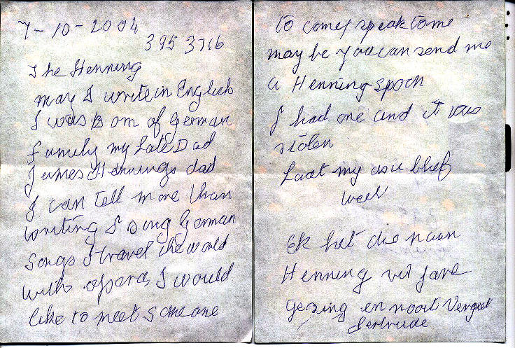
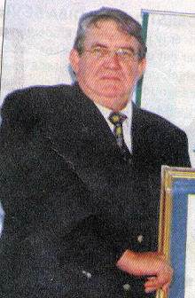
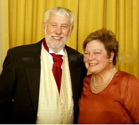
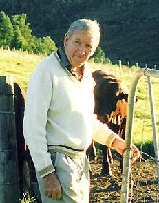
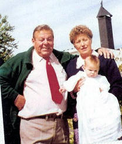
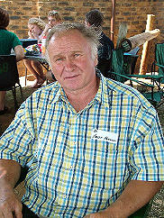
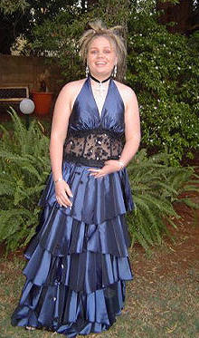
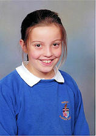

|
Indeks: |

b7.c8.d8.e1.f5. Gideon Stephanus Henning *10-10-1935 van Strand is nie net reeds 72 jaar oud en Voorsitter van die Henning Familiebond nie, hy is ook 'n kranige pluimbal-speler en speel vir die Valsbaai Pluimbal-klub. Hy is ook gekies om op provinsiale vlak vir Boland in die Provinsiale Meesters-liga te speel. Dit is nou vir spelers ouer as 40 jaar. Hy het 'n paar maande gelede nog aan die Suid-Afrikaanse Goue Arende toernooi in Kimberley deelgeneem teen manne wat sy seuns kon gewees het.
Oupa Gideon se kleinkinders is so beindruk met hulle oupa, dat drie van hulle ook by die Valsbaai Pluimbalklub aangesluit het en met so 'n bietjie aanmoediging en afrigting deur oupa, ook reeds in hul onderskeie ouderdomsgroepe verkies is om Boland te verteenwoordig. Nina Goosen het Boland verteenwoordig tydens die Suid-Afrikaanse Onder 17 toernooi in Pretoria. Stephan - en Nardo Henning het Boland verteenwoordig tydens die Suid-Afrikaanse Onder 15 toernooi, wat in Kaapstad plaasgevind het. Nardo het ook aan die Suid-Afrikaanse Onder 13 toernooi in Oos-Londen deelgeneem. Die Boland Onder 13 seunsspan het hulle afdeling van die toernooi gewen.
Hierdie oupa is net so trots op sy kleinkinders as wat hulle op hom is!

In die vorige Nuusbrief (No 92/November 2007) het ons berig oor die afsterwe van b5.c4.d7.e1.f1. Gertruida Susanna Steenkamp (gebore Henning) op 11 September 2007 in die ouderdom van 101 jaar.
Bondsekretaris, Olivier Henning ontvang van tyd tot tyd briewe van mense waarvan hy geen besonderhede het of wat hy nie in sy normale liaseerstelsel kan inpas nie. Onlangs het Olivier weer deur hierdie lêer (van onopgelosde sake) geblaai en kom toe weer af op 'n briefie wat hy gedurende Oktober 2004 ontvang het, maar waarop hy nie kon reageer nie, omdat daar geen volledige naam of adres op verskyn het nie - 'n brief van 'n "Gertrude".
Dit het nou duidelik geword dat hierdie briefie van die (op daardie stadium) 98-jarige Gertrude (of Gertruida) Steenkamp (gebore Henning) gekom het. As ons maar net geweet het, sou Olivier beslis reëlings getref het dat iemand in die omgewing van Benoni haar gaan besoek het ... maar dit is nou te laat.



Rowers het vroeg die oggend van 17 November 2007 die werkers op die plaas van b7.c7.d10.e3.f1. Philippus Arnoldus (Flip) Henning in die Trompsburg distrik in hul huise oorval, een doodgeslaan toe hy hom teësit en daarna vir Flip geskiet.
Flip het vermoed daar is fout toe sy werkers nie soos gewoonlik om 07:00 opgedaag het om huisgodsdiens te hou nie. Hy was in sy bakkie op pad na die werkers se huise toe hy onverwags op die rowers afgekom het. Hulle het hom in sy bors geskiet.
Die rowers het mnr Kallie Visser, een van Flip se werkers en die pa van twee jong kinders, toe reeds met 'n stuk yster doodgeslaan. Dit was omdat hy nie wou toelaat dat hulle hom soos die ander werkers vasbind nie.
Die aanvallers het die plaaswerkers van vroegoggend af ondervra. Hulle wou die plaashuis se sleutels hê. Uiteindelik het hulle die huishulp met 'n vuurwapen gedwing om saam met hulle na die plaashuis te gaan - vermoedelik om Flip en sy gesin te gaan beroof. Hulle was nog op pad toe hulle Flip teëkom. Nadat hy geskiet is, het Flip by die plaashuis gaan hulp soek en die rowers het gevlug.
Boere van die omgewing was binne minute op die toneel. Hulle het al vyf die rowers vasgetrek. Een van die aangekeerdes het kort daarna selfmoord gepleeg. Die rowers het musse en handskoene gedra en almal het 'n blou lint of tou om die nek gedra.
Flip is dieselfde oggend in die MediClinic-hospitaal in Bloemfontein geopereer. Sy seun Pieter, 'n prokureur van Bloemfontein, het bevestig dat sy pa buite gevaar is. Die koeël het sy pa in die dunderm getref.


b7.c2.d3.e5.f2.g3. Pieter Emile Henning van Malanshof, Randburg het laat weet dat hy en sy vrou, Pat gedurende November 2007 in 'n gewapende rooftog by hul huis betrokke was, terwyl hulle na 'n Wêreldbeker rugbywedstryd gesit en kyk het. Die rowers het eers een van hul twee honde doodgeskiet en daarna vir Pieter en Pat vasgebind. Daarna is hulle beroof van juwele, ringe, rekenaars, skilderye, handsakke, messe, vurke, lepels, horlosies, skoene, klere, tasse, parfuum, TV's, drukkers, skootrekenaars, selfone, kameras, videos, sleutels en 'n horde ander goed. Hulle het alles in Pat se motor gepak en daarmee weggery.
Gelukkig is nie een van die twee beseer nie, hoewel hulle baie lus was om Pieter te skiet omdat hy nie gehoorsaam genoeg was nie. Hulle het slegs 'n skoot gevuur om hom skrik te maak, nadat hy hulle begin ondervra het. Pat het inderwaarheid Pieter se lewe gered, want sy het herhaaldelik vir die rowers gesê dat Pieter doof is en hulle nie kon hoor nie, daarom het hy hulle misverstaan en nie gedoen wat hulle gesê het nie.
Pieter het hierna vir die rowers gevra of hulle kon voortgaan om die wedstryd tussen Argentinië en Skotland te sit en kyk, terwyl hulle al die goed uitdra. Hy sal ook nie die Polisie ontbied nie. Dit het hulle woedend gemaak en 'n tweede skoot is afgevuur. Ongelukkig was slegs Pat se motor, wat later onbeskadig teruggevind is, verseker. Niks van die ander goed was verseker nie.


b1.c1.d6.e2.f2.g3. Petrus Johannes (Hentie) Henning, *15-3-1926 81-jarige hopsboer en beesboer van Geelhoutboom distrik, het groot geword in Vryheid, Natal en vir baie jare by die destydse Windmeul Kunsmis gewerk.
Soos hy van plaas tot plaas gereis het, het Hentie met sy joviale persoonlikheid baie vriende gemaak. Self het hy vir baie jare in die Babanango distrik geboer. Sy passie en kennersoog vir sy Hereford beeste was alom bekend en saam met sy werkers, Naftalie en Kwesh, het hulle die boerdery op die plaas Jakkalsdans geniet.Hentie het vir jare in die Noord Kaap en Wes Transvaal aan die bestuur gestaan van die Triomf Kunsmis verkoopsspan. Van Rustenburg tot in Vryburg het hy boeredae bygewoon, kunsmis verkoop en spesiale vriende gemaak.
Sy bekende groet "Hallo my ou maat" sal sy vriende nooit vergeet nie.
Die afgelope 30 jaar het Hentie Henning geboer in die Geelhoutboom distrik. Op die plase Highbury en Klynefontein het hy hops verbou en weereens met beeste geboer. Hy was ook vir jare 'n ywerige ontwikkelaar.
Hentie het die gawe gehad om die potensiaal van 'n stuk landbougrond teen 'n dorp raak te sien. Hy het dan die grond "ryp" gemaak, deur al die prosesse van dorpstigting gevat en uiteindelik spogerwe verkoop.
Highbury en Croydon in Kaapstad en die bekende Island View in Mosselbaai getuig hiervan. Hentie was joviaal, by tye baie ernstig en soms kwaai, maar nooit het hy kwaad gebly nie, baie reguit in besigheid en jy het altyd geweet waar jy met hom staan. Daar was nie vir Hentie goed soos "grys areas" nie.
Miskien die belangrikste van Hentie Henning was sy besondere intieme verhouding met die Here. Hy het nie geskroom om in die publiek die Here se naam te loof en Hom te prys nie. Hy was dikwels betrokke by verskeie "manne kampe" en het nooit geskroom om enige iets by te dra of te doen wat sou bydra tot die inkeer van siele vir die koningkryk nie.
In September 2003 het hy 'n massiewe beroerte gekry en is hy die daaropvolgende 4 jaar, tot en met sy dood op 12 November 2007, in Littleton Frail Care uitstekend versorg.

b6.c1.d1.e9.f8.g3. Willem Reimer Henning *15-10-1934 is oorlede op 24 November 2007. Sy familie en vriende het hom "Remi" of "Kiwi" genoem en hy het sy lewe voluit geniet. Hy het vir baie jare in Kenia en vanaf ongeveer 1954 tot 1962 in Nieu-Seeland gewoon. Hierna keer hy terug na Afrika, waar hy tussen Suid-Afrika, Kenia en Zimbabwe gependel het. Hy het egter ook eiendom in die Seychelles besit en het dikwels vir lang rukke hier gewoon. Hy het sy eie besigheid gehad en het op die ouderdom van 48 afgetree. Hy was baie lief vir die buite-lewe en het baie deur die land en Zimbabwe getoer in 'n Motorhome. Hy was baie lief vir diere - selfs 'n honger brak was langs die pad vir kos kom snuffel! Dit was in Zimbabwe gewees, Hy het daai groot motorhome gestop en vir sy vrou, Ann gevra "mommy where are the left overs, shame the poor dog is hungry" en hy het uitgeklim en die kos vir die brak gegee.
Kiwi was 'n diabeet, maar hy het sy siekte goed hanteer en sy selfdissipline was baie sterk. Die laaste 3 of wat jare het sy hart begin probleme gee, en sy bloeds- omloop het begin versleg. Hy het kort voor sy dood gangerine in sy linkerbeen gekry. Een ding was seker: Hy het nog oop en helder gedink en was sterk tot die einde toe. Sy vrou, Ann het tot die einde by hom gestaan en nag en dag vir hom gesorg.

b6.c4.d1.e5.f3.g7.h2. Johannes Lodewikus(Hansie) Henning *6-5-1946 is op 9 Januarie 2008 oorlede. Hy was een van 'n tweeling. Sy tweeling boetie het egter as 'n baba gesterf. Hansie moes van 'n baie jong ouderdom die plek van sy pa inneem, aangesien sy pa baie maande van die huis af weg was weens werk verpligtinge. Sy ma moes dan alleen met die klompie kinders by die huis agterbly.
Dit was Hansie wat gehelp het met die ander kinders se skoolwerk en getroos het as een seer gekry het. Hy was baie beskermend teenoor sy ma en geen taak was ooit vir hom te groot om vir haar te doen nie.
Nadat hy gematrikuleer het, het hy by sy ouers aangebly. Die ander kinders is so een na die ander getroud en uit die huis uit. Hy het die taak om na sy ouers om te sien op sy skouers geneem. Deur die erns van sy besluit het hy nooit getrou nie, maar sy vriendin van baie jare was sy steunpilaar.
Nadat sy pa met pensioen gegaan het, het hulle die huis in die stad verkoop en is die drie van hulle na Hansie se plaas te De Wagensdrif, Cullinan. Daar het hulle die volgende twintig jaar gebly en was die drie onafskeidbaar van mekaar.
Die dag toe sy vader oorlede is (hy het inmekaar gesak toe hulle winkel toe was) was dit Hansie wat die sowat 40 kilometers na die Cullinan hospitaal gejaag het, waar sy pa dood verklaar is.
Hy en sy ma het aangebly op die plaas. Hy het alles in sy vermoë gedoen om die lewe vir haar so aangenaam moontlik te maak. Omtrent ses maande na sy pa se dood het Hansie begin siek word, en is hy op 14 November 2006 met Kolon Kanker gediagnoseer. Die kanker het reeds na sy blaas en lewer versprei. Hy is op die 28 ste Desember 2006 geopereer om die kanker te verwyder maar die kanker was so erg dat hulle net vir hom 'n maagsak ingesit het en nie aan die kanker gesny het nie. Hy het hierna Chemo en bestraling behandel ontvang.
Die skok dat haar seun so siek is was te groot vir sy ma en sy het 'n hartaanval gehad en is in die Eugene Marais Hospitaal opgeneem waar sy op 31ste Januarie 2007 oorlede is.
Hansie het so siek as wat hy was, nog deurgery na Bronkhorstspruit en al haar begrafnisreëlings gaan tref. Die oggend van sy moeder se begrafnis het hy weereens uit die bed opgestaan en haar kerkdiens en die verrigtinge by die begraafplaas bygewoon. Sedertdien het sy toestand bykans dag na dag verswak totdat hy op 9 Januarie 2008 gesterf het.


Vier-en-veertig (44) Henning jongmense het aan die einde van 2007 Matriek in een of ander vorm in Suid-Afrika geslaag. Ongelukkig (en tot ons spyt) kon ons die meerderheid nie positief identifiseer nie, weens onvoldoende gegewens of omdat ons hulle nog nie op rekord het nie. Hierdie matrikulante was nog nie gebore toe Olivier Henning met sy navorsing na die Henning families begin het nie. Dit is duidelik dat daar heelwat families is wat ons nie op hoogte gehou het van nuwe aankomelinge nie.
Die drie skoliere wat die beste gevaar het, was:
1. Dean John Henning wat die Seniorsertifikaateksamen in Gauteng afgelê en met onderskeiding geslaag het, met ses vakke waarin hy onderskeidings behaal het: Engels 1e taal HG, Afrikaans 2e taal HG, Wiskunde HG, Natuur-en-Skeikunde HG, Rekeningkunde HG en Kuns HG. Ongelukkig kon ons nie bepaal waar hy in die Henning geslagsregister inpas nie.
2. Jandré Henning wat die Seniorsertifikaateksamen in die Noord-Wes Provinsie afgelê en met onderskeiding geslaag het, met vyf vakke waarin hy onderskeidings behaal het: Afrikaans 1e Taal HG, Wiskunde HG, Natuur-en-Skeikunde HG, Biologie HG en Rekeningkunde HG. In sy geval kon ons ook nie bepaal waar hy in die Henning Geslagsregister inpas nie.
3. b7.c8.d8.e1.f2.g2.h2.Anél Henning, dogter van Stanley- en Mary-Ann Henning van Wierdapark, Centurion het ook die Seniorsertifikaat eksamen met onderskeiding verwerf, met vier vakke waarin sy onderskeidings behaal het: Engels 2e Taal HG, Wiskunde HG, Kuns HG en Tegniese Tekene HG. Haar broer Heinrich het die jaar vantevore (2006) met vyf onderskeidings geslaag.
Die verspreiding van die Henning familie oor die hele Suid-Afrika word goed deur die statistiek van hierdie 44 Henning kinders geillustreer:
Provinsie Aantal
Gauteng 20
Limpopo 2
Vrystaat 4
Oos-Kaap 2
Noord-Wes 3
Wes-Kaap 2
Mpumalanga 3
Beweging vir Christelike Volkseie Onderwys 1
Natal 3
Onafhanklike Eksamenraad 1
Noord-Kaap 3


Jannetta Steyn die dogter van b7.c8.d8.e3.f1. Leonetta (Leonie) Steyn (gebore Henning) is wel nie 'n gebore Henning nie - slegs haar ma was een, maar sy is die persoon wat die Henning webwerf op Internet tot stand gebring het en dit steeds in stand hou - alles op haar eie koste. Jannetta en haar twee kinders (Leonetta en Stuart) woon in Durham, Engeland en is Britse burgers.
Ouma Leonie het laat weet dat klein Leonetta (10) onlangs 'n sertifikaat en ander pryse verower het vir kreatiewe skryfwerk. Al die skole in Engeland stuur een keer per jaar die werke van belowende kinders in vir die "Young Writers Tiny Tales" kompetisie. Jannetta se storie "Zoe Buys The Weapon" is opgeneem in die boek met die heel beste stories. BAIE GELUK LEONETTA!! en ouma Leonie!

Baie dankie aan al ons lede wat reeds hul finansiële bydraes vir 2008 aangestuur het. Soos gebruiklik vermeld ons graag die name van diegene wat bydraes van R200.00 en meer gemaak het:
Mnr Mark Henning, 'n Lewenslange lid van River Club - R400.00
Mev Meisie De Lange van Menlopark, Pretoria - R200.00
Dr P A (Philip) Henning van Stellenberg, Durbanville - R200.00
Mnr J C (Jan) Henning van Hartbeesfontein - R500.00
Mnr J C (Jacobus) Henning van Noordstad, Bloemfontein - R200.00
Mnr W P (Werner) Henning van Cresta, Johannesburg - R250.00
Twee persone het direkte depositos in die Familiebond se rekening gemaak, sonder om hul name of enige verwysing te vermeld. Laat weet asseblief vir ons wie u is.
'n Deposito van R100.00 op 19 November 2007 by die Herculestak van ABSA
'n Deposito van R30.00 op 15 Desember 2007 by die Gardens tak van ABSA

Op Saterdag 10 Mei 2008 (vanaf 09h00 tot 13h00) word 'n Genealogie- en Erfenisfees by die Voortrekkermonument in Pretoria gehou EN DIE HENNING FAMILIEBOND GAAN OOK 'N STALLETJIE BY DIE FEES INRIG. Gideon- en Olivier Henning, onderskeidelik Voorsitter en Bondsekretaris van die Familiebond sal van die Kaap af opvlieg om die stalletjie te beman.
Alle Hennings in die omgewing van Pretoria word hartlik uitgenooi om te kom groet en sommer te kyk wat ons en ander uitstallers dié dag doen.